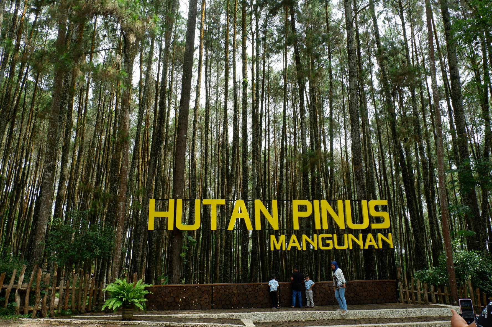
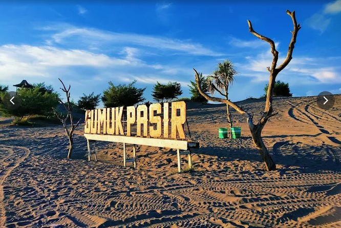
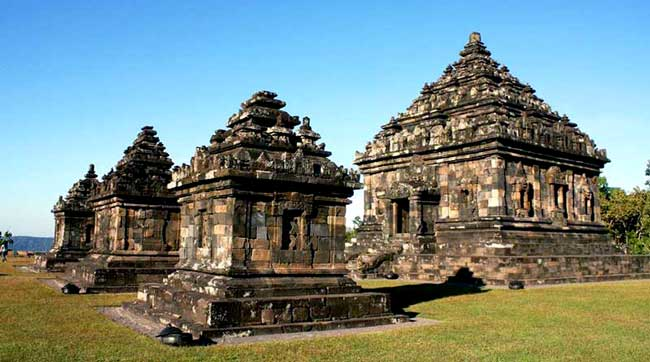
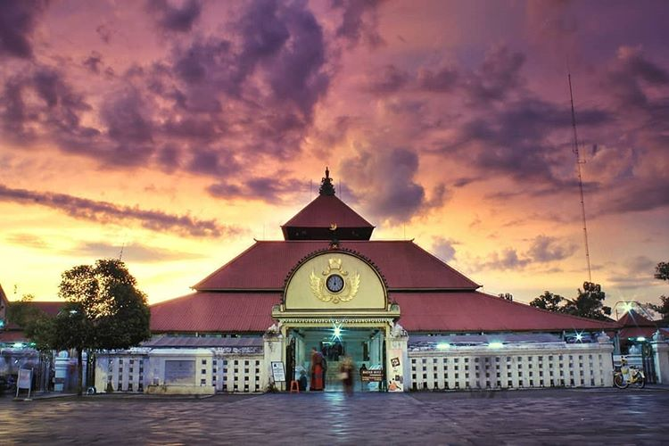
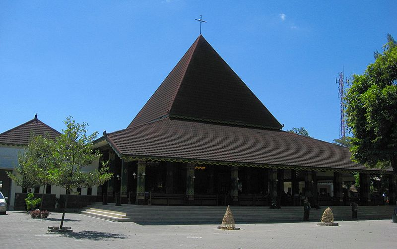
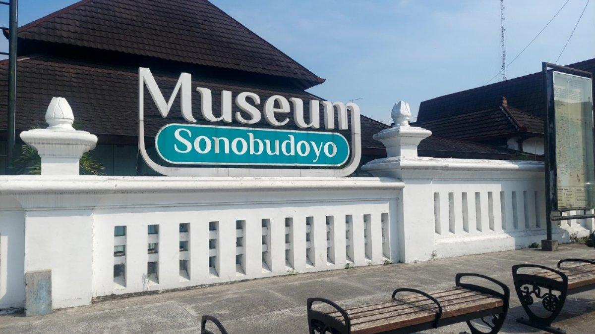

Wisata hutan pinus ikonik dengan suasana asri di Bantul.

Padang pasir unik dan langka di pesisir selatan Yogyakarta.

Candi tertinggi di Yogyakarta dengan pemandangan sunset menawan.

Masjid bersejarah pusat spiritual Kesultanan Yogyakarta.

Gereja unik dengan perpaduan arsitektur Jawa yang kental.
Wahana edukasi sains yang interaktif dan menyenangkan untuk keluarga.

Pusat edukasi kebudayaan Jawa dengan koleksi artefak lengkap.
Petualangan ekstrem menembus jalur sungai pasir sisa aliran lahar dingin Merapi menggunakan jip terbuka.
Pantai ikonik pesisir selatan dengan gumuk pasir langka dan pemandangan sunset yang magis.
Menikmati lanskap perbukitan kapur Gunungkidul yang berpadu dengan gemerlap lampu kota Jogja dari ketinggian.
Hijaunya hamparan hutan pegunungan Menoreh Kulon Progo berlatar waduk sermo yang tenang.
Istana hidup pusat peradaban kesultanan Jawa yang merawat arsitektur pusaka peninggalan Mataram Islam.
Situs reruntuhan pemandian pribadi sultan yang menyimpan rahasia lorong bawah air.
Situs saksi bisu kolonialisme Belanda yang kini bertransformasi menjadi museum diorama perjuangan.
Kota lama pusat kerajinan perak yang menyimpan kompleks makam raja-raja pendiri dinasti Mataram.
Poros sumbu imajiner tempat bertemunya tradisi dagang, seni angkringan, dan seniman jalanan legendaris.
Kampung kuliner tradisional penghasil gudeg kering manis resep keraton asli semenjak abad ke-19.
Pusat transaksi budaya dan pasar batik tertua tempat bertemunya keramahan khas masyarakat Jawa.
Kompleks rumah kubah eksentrik pelestari ratusan karya seni lukis maestro ekspresionisme dunia.
Antara berada di kategori berbeda atau memang belum dicantumkan.